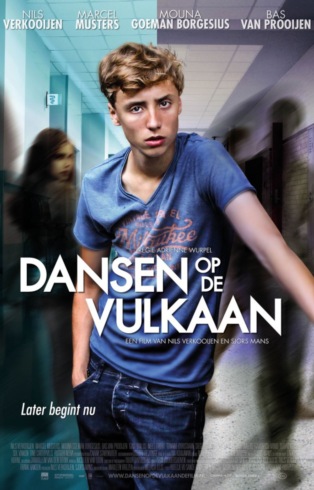

Dansen op de Vulkaan

Duur: 84 minuten
Genre: - Drama | Nederlands -
Het verhaal draait om Maarten (Nils Verkooijen), een jongen van 16 die supergoed kan dansen. Elk uurtje dat hij over heeft, is hij in de dansschool te vinden Maar Maarten draagt een geheim met zich mee dat maar weinig mensen kennen. Hij heeft een stofwisselingsziekte en als daar niet snel medicijnen voor worden gevonden, is de kans groot dat hij binnen een paar jaar zal overlijden. Ondanks zijn ziekte wil Maarten volop genieten van het leven en overal aan meedoen, maar hij loopt tegen steeds meer beperkingen aan.
Director: Adriënne Wurpel
Stars:Nils Verkooijen, Marcel Musters, Gina van Os